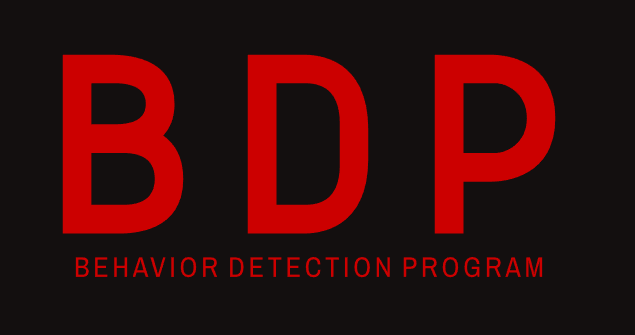

Seguimiento de Vuelos a Norteamerica
Registro de Entrada
Registro de Salida
🔒 Iniciar sesión
Bienvenido al Registro del Grupo BDP
Recopila y controla los registros de entrada, salida y vuelos de forma eficiente.